3. SQL 语言简介
在本章的这一部分，我们将介绍用于创建和操作单个表的首批 SQL 命令。我们通常提供这些命令的简化版本。其完整语法可在 Firebird 参考指南中查阅（参见第 2.2 节）。
数据库的用户拥有不同的技能水平：
- 数据库管理员通常精通 SQL 和数据库。他们负责创建表，因为此操作通常只需执行一次。随着时间的推移，他们可能需要修改表的结构。数据库是由关系链接起来的表的集合。数据库管理员定义这些关系。他们还向数据库的各种用户授予权限。例如，他们可以指定某个用户有权查看表的内容，但无权修改它。
- 数据库用户则是让数据焕发生机的人。根据数据库管理员授予的权限，他们将在数据库的各个表中添加、修改和删除数据。他们还会分析数据，从中提取对业务顺畅运营、行政管理等方面有用的信息。
在第 2.6 节中，我们介绍了 [IB-Expert] 工具的 SQL 编辑器。这就是我们将要使用的工具。让我们回顾几点内容：
- 可通过 [工具/SQL 编辑器] 菜单选项或按下 [F12] 键访问 SQL 编辑器

这将打开一个 [SQL 编辑器] 窗口，我们可以在其中输入 SQL 命令：

上图通常用以下文字表示：
3.1. Firebird 数据类型
创建表时，必须指定表列可以包含的数据类型。本文将介绍最常见的 Firebird 数据类型。请注意，不同数据库管理系统（DBMS）的数据类型可能有所不同。
[-32768, 32767] 范围内的整数：4 | |
[–2,147,483,648, 2,147,483,647] 范围内的整数：-100 | |
具有 n 位数的实数，其中 m 位为小数 NUMERIC(5,2)：-100.23、+027.30 | |
四舍五入到7位有效数字的实数：10.4 | |
近似到15位有效数字的实数：-100.89 | |
一个恰好包含 N 个字符的字符串。如果存储的字符串少于 N 个字符，则用空格补足。 CHAR(10)：'ANGERS '（末尾有 4 个空格） | |
最多 N 个字符的字符串 VARCHAR(10): 'ANGERS' | |
一个日期：'2006-01-09'（YYYY-MM-DD 格式） | |
时间：'16:43:00'（HH:MM:SS 格式） | |
日期和时间：'2006-01-09 16:43:00'（格式 YYYY-MM-DD HH:MM:SS） |
CAST() 函数允许您在必要时将一种类型转换为另一种类型。要将声明为类型 T1 的值 V 转换为类型 T2，请编写：CAST(V,T2)。您可以执行以下类型转换：
- 数字转字符串。这种类型转换是隐式的，无需使用 CAST 函数。因此，运算 1 + '3' 无需对字符 '3' 进行转换，其结果为数字 4。
- DATE、TIME、TIMESTAMP 与字符串之间的转换，反之亦然。因此
- TIMESTAMP 转换为 TIME 或 DATE，反之亦然
在表中，行可能包含无值的列。我们称该列的值为 NULL 常量。您可以使用运算符检查该值是否存在
IS NULL / IS NOT NULL
3.2. 创建表
要了解如何创建表，我们将首先使用 IBExpert 在 [设计] 模式下创建一个表。为此，我们将按照第 2.3 节中描述的方法进行操作。这将创建以下表：

该表将用于记录图书馆购买的书籍。各字段的含义如下：
名称 | 类型 | 约束 | 含义 |
此表是使用 IBEXPERT 向导创建的，但也可以直接使用 SQL 语句创建。要查看这些语句，只需查看该表的 [DDL] 选项卡：
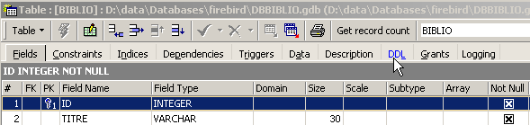
用于创建 [BIBLIO] 表的 SQL 代码如下：
- 第 1 行：所有者 Firebird - 指示所使用的 SQL 方言级别
- 第 2 行：Firebird 特有 - 指定所使用的字符集
- 第 6–14 行：SQL 标准：通过定义各列的名称和数据类型来创建 BIBLIO 表。
- 第 16 行：SQL 标准：创建约束，规定 TITLE 列不允许重复
- 第 17 行：SQL 标准：指定 [ID] 列为表的主键。这意味着表中不存在两行具有相同 ID 的情况。这与 [TITLE] 列上的 [UNIQUE NOT NULL] 约束类似，实际上 [TITLE] 列本可以作为主键。 当前的趋势是使用没有特定含义且由数据库管理系统（DBMS）生成的主键。
[CREATE TABLE] 命令的语法如下：
CREATE TABLE 表名 (列名1 列类型1 列约束1, 列名2 列类型2 列约束2, ..., 列名N 列类型N 列约束N, 其他约束) | |||||||||
创建具有指定列的 table 表
|
[BIBLIO] 表也可以通过以下 SQL 语句创建：
让我们演示一下。在 SQL 编辑器（F12）中打开此查询，创建一个名为 [BIBLIO2] 的表：

执行后，必须提交事务才能在数据库中查看结果：

完成此操作后，该表便会出现在数据库中：

双击其名称，即可查看其结构：

我们可以看到为 [BIBLIO2] 表创建的定义
3.3. 删除表
删除表的 SQL 语句如下：
DROP TABLE 表名 | |
删除 [表] |
要删除我们刚刚创建的 [BIBLIO2] 表，现在执行以下 SQL 命令：

并通过 [Commit] 确认。此时 [BIBLIO2] 表已被删除：

3.4. 填充表
现在，让我们向刚刚创建的 [BIBLIO] 表中插入一行数据：

点击 [提交] 确认行已添加，然后右键单击已添加的行：

如上所示，将插入的行复制到剪贴板，作为一条 INSERT SQL 语句。接下来，打开任意文本编辑器并粘贴刚才复制的内容。我们将得到以下 SQL 代码：
INSERT INTO BIBLIO (ID,TITRE,AUTEUR,GENRE,ACHAT,PRIX,DISPONIBLE) VALUES (1,'Candide','Voltaire','Essai','18-OCT-1985',140,'o');
SQL INSERT 语句的语法如下：
insert into 表 [(列1, 列2, ..)] values (值1, 值2, ....) | |
向表中添加一行（value1, value2, ...）。如果列1、列2...已存在，则这些值将赋给这些列；否则，将按定义顺序赋给表中的列。 |
为了向 [BIBLIO] 表中插入新行，我们将在 SQL 编辑器中输入以下 INSERT 语句。我们将逐一执行并提交这些语句。我们将使用 [新建查询] 按钮转到下一个 INSERT 语句。
提交 [Commit] 这些 SQL 语句后，我们得到如下表：
 |
3.5. 查询表
3.5.1. 简介
在 SQL 编辑器中，输入以下命令：

并执行该命令。我们将得到以下结果：

SELECT 语句用于从数据库表中检索数据。该语句的语法非常丰富。在此，我们将重点介绍查询单个表的语法。关于同时查询多个表的内容，我们将在后续章节中介绍。SQL [SELECT] 语句的语法如下：
SELECT [ALL|DISTINCT] [*|表达式1 别名1, 表达式2 别名2, ...] FROM 表 | |
显示表中所有行对应的 expression1 的值。expression1 可以是列，也可以是更复杂的表达式。符号 * 表示所有列。默认情况下，显示表中的所有行（ALL）。如果使用了 DISTINCT，则仅显示重复的选定行一次。expression1 的值将显示在名为 expression1 的列中，如果使用了别名 alias1，则显示在该列中。 |
示例：


在上面的示例中，我们为所查询的列赋予了别名（BOOK_TITLE、PURCHASE_PRICE）。
3.5.2. 显示满足条件的行
SELECT .... WHERE 条件 | |
仅显示满足条件的行 |
示例


其中一本书的类型为“novel”，而非“Novel”。我们使用UPPER函数（该函数可将字符串转换为大写）来获取所有小说。

我们可以使用逻辑运算符组合条件
逻辑与 | |
逻辑或 | |
逻辑非 |


 |

3.5.3. 按特定顺序显示行
在上述语法基础上，您可以添加 ORDER BY 子句来指定所需的显示顺序：
SELECT .... ORDER BY 表达式1 [asc|desc], 表达式2 [asc|desc], ... | |
选择结果的行按以下顺序显示 1：按表达式1的升序（asc / ascending，这是默认值）或降序（desc / descending）排序 2: 如果表达式1相等，则根据表达式2的值进行显示 等等。 |
示例：


3.6. 从表中删除行
DELETE FROM 表 [WHERE 条件] | |
删除满足条件的表行。如果未指定条件，则删除所有行。 |
示例：
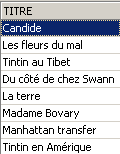
以下两个命令依次执行：

3.7. 修改表中的内容
update table set 列1 = 表达式1, 列2 = 表达式2, ... [where 条件] | |
对于满足条件（若无条件则为所有行）的表行，将 column1 设置为 expression1 的值。 |
示例：
我们将所有流派名称首字母大写：

我们检查：

显示价格：

小说的价格上涨了5%：
让我们来检查一下：

3.8. 永久更新表
当对表进行修改时，Firebird 实际上是将这些修改应用到表的副本上。随后可以通过 COMMIT 和 ROLLBACK 命令将这些修改永久保存或回滚。
COMMIT | |
将自上次COMMIT以来对表所做的更新永久保存。 |
回滚 | |
回滚自上次 COMMIT 以来对表所做的所有更改。 |
在以下情况下会隐式执行 COMMIT： a) 退出 Firebird 时 b) 每次执行影响表结构的命令后：CREATE、ALTER、DROP。 |
示例
在 SQL 编辑器中，您可以通过提交自上次 COMMIT 或 ROLLBACK 以来执行的所有操作，将数据库恢复到已知状态：
我们检索标题列表：

删除书名：
验证：
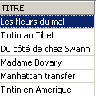
标题已成功删除。现在我们将回滚自上次 COMMIT / ROLLBACK 以来所做的所有更改：
验证：
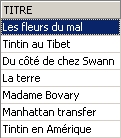
已删除的书名又出现了。现在让我们检索价格列表：

让我们将所有价格设为零。
让我们检查一下价格：

让我们撤销对数据库所做的更改：
然后再次检查价格：

我们已恢复了原始价格。
3.9. 将一行数据从一个表添加到另一个表
当两个表的结构兼容时，可以将行从一个表添加到另一个表中。为了演示这一点，让我们先创建一个与 [BIBLIO] 结构相同的 [BIBLIO2] 表。
在 IBExpert 数据库资源管理器中，双击 [BIBLIO] 表以打开 [DDL] 选项卡：
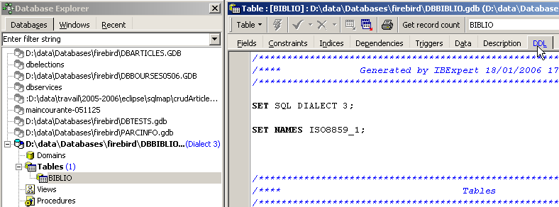
在此选项卡中，您将看到用于生成 [BIBLIO] 表的 SQL 语句列表。将所有代码复制到剪贴板（CTRL-A，CTRL-C）。然后打开名为 [Script Executive] 的工具，该工具允许您执行一组 SQL 语句：

此时将打开一个文本编辑器，我们可以将之前复制到剪贴板的文本粘贴（CTRL-V）到其中：

SQL 命令列表通常被称为 SQL 脚本。[Script Executive] 允许我们执行此类脚本，而 SQL 编辑器每次只能执行一条命令。当前的 SQL 脚本会创建名为 [BIBLIO] 的表。让我们让它创建一个名为 [BIBLIO2] 的表。要做到这一点，只需将 [BIBLIO] 改为 [BIBLIO2]：
让我们使用下方的 [运行脚本] 按钮来运行此脚本：

脚本已执行：

我们可以在数据库资源管理器中看到新创建的表：

如果双击 [BIBLIO2] 查看其内容，我们会发现它是空的，这是正常的：

SQL INSERT 语句的一种变体允许您将一行数据从一个表插入到另一个表中：
INSERT INTO 表1 [(列1, 列2, ...)] SELECT 列1, 列2, ... FROM 表2 WHERE 条件 | |
满足该条件的 table2 中的行将被插入到 table1 中。table2 中的列 column1、column2、... 将按顺序赋值给 table1 中的 column1、column2、...，因此这些列的类型必须兼容。 |
让我们回到 SQL 编辑器：

并执行以下 SQL 语句：
该语句将 [BIBLIO] 表中所有对应于小说（novel）的行插入到 [BIBLIO2] 表中。执行完 SQL 语句后，让我们使用 [Commit] 进行提交：
现在，让我们查看 [BIBLIO2] 表中的数据：
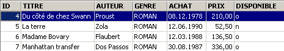
3.10. 删除表
DROP TABLE 表名 | |
删除表 |
示例：删除 BIBLIO2 表
确认更改：
在数据库资源管理器中，刷新表格视图：

我们可以看到 [BIBLIO2] 表已被删除：

3.11. 修改表的结构
ALTER TABLE 表名 [ ADD 列名1 列类型1 列约束1] [ALTER 列名2 TYPE 列类型2] [DROP 列名3] [ADD 约束] [DROP CONSTRAINT 约束名] | |
允许您添加 (ADD)、修改 (ALTER) 和删除 (DROP) 表列。语法 column_name1 column_type1 column_constraint1 与 CREATE TABLE 的语法相同。您还可以添加或删除表约束。 |
示例：在 SQL 编辑器中依次执行以下两个 SQL 命令
在数据库资源管理器中，让我们查看 [BIBLIO] 表的结构：
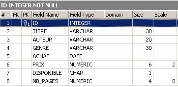
更改已应用。让我们看看表的内容发生了哪些变化：

新创建的 [NB_PAGES] 列已创建但没有值。让我们删除该列：
让我们查看 [BIBLIO] 表的新结构：

[NB_PAGES] 列确实已经消失了。
3.12. 视图
可以创建一个表或多个表的部分视图。视图的行为类似于表，但不包含数据。其数据是从其他表或视图中提取的。视图具有以下几个优点：
- 用户可能只对特定表中的某些列和行感兴趣。视图允许他们仅查看这些列和行。
- 表的所有者可能希望仅向其他用户授予有限的访问权限。视图使他们能够做到这一点。经其授权的用户将仅能访问其定义的视图。
3.12.1. 创建视图
CREATE VIEW 视图名 AS SELECT 列1, 列2, ... FROM 表 WHERE 条件 [ WITH CHECK OPTION ] | |
创建视图 view_name。这是一个具有以下结构的表：column1, column2, ... 来自表 table，其行来自表 table 中满足条件 condition 的行（如果没有条件，则为所有行） | |
此可选子句指定，对视图的插入和更新操作不得创建视图无法选中的行。 |
注 CREATE VIEW 的语法实际上比上文所述更为复杂，特别是允许基于多张表创建视图。要实现这一点，SELECT 语句只需引用多张表即可（参见下一章）。
示例
我们基于 biblio 表创建一个视图，该视图仅包含小说（行选择），且仅包含标题、作者和价格这三个列（列选择）：
在数据库资源管理器中，刷新视图（F5）。此时将显示一个视图：

我们可以查看与该视图关联的 SQL 语句。要执行此操作，请双击 [ROMANS] 视图：

视图类似于表。它具有以下结构：

以及内容：

视图的使用方式与表类似。您可以对其执行 SQL 查询。以下是在 SQL 编辑器中可以尝试的几个示例：

这本新小说在[ROMANS]视图中可见吗？

让我们在 [BIBLIO] 表中添加一些小说以外的内容：
SQL> insert into biblio(id,titre,auteur,genre,achat,prix,disponible) values (11,'Poèmes saturniens','Verlaine','Poème','02-sep-92',200,'o');
让我们检查一下 [BIBLIO] 表：

让我们查看 [ROMANS] 视图：

新增的书籍未出现在 [ROMANS] 视图中，因为它不满足 upper(genre)='ROMAN' 的条件。
3.12.2. 更新视图
您可以像更新表一样更新视图。视图数据所提取的所有源表都会受到此更新的影响。以下是一些示例：
SQL> insert into biblio(id,titre,auteur,genre,achat,prix,disponible) values (13,'Le Rouge et le Noir','Stendhal','Roman','03-oct-92',110,'o')


我们从 [ROMANS] 视图中删除一行：


从 [NOVELS] 视图中删除的行也已从 [BIBLIO] 表中删除。现在，我们将提高 [NOVELS] 视图中书籍的价格：
让我们在 [NOVELS] 中查看：

这对 [BIBLIO] 表产生了什么影响？

[BIBLIO]表中小说的价格确实也上涨了5%。
3.12.3. 删除视图
DROP VIEW 视图名 | |
删除名为 |
示例
在数据库资源管理器中，您可以刷新视图（F5），会发现 [ROMANS] 视图已消失：

3.13. 使用分组函数
有些函数并非对表中的每一行进行操作，而是对行组进行操作。这些本质上是统计函数，允许我们计算某列数据的均值、标准差等。
SELECT f1, f2, .., fn FROM 表 [ WHERE 条件 ] | |
计算表中所有满足条件的行上的统计函数 fi。 |
SELECT f1, f2, .., fn FROM 表 [ WHERE 条件 ] [ GROUP BY 表达式1, 表达式2, ..] | |
GROUP BY 关键字将表中的行划分为组。每个组包含那些表达式 expr1、expr2、... 具有相同值的行。 示例：GROUP BY genre 会将同一类型的书籍分组。GROUP BY author,genre 子句则会将作者和类型相同的书籍分组。WHERE 条件首先会从表中移除不符合该条件的行。随后，通过 GROUP BY 子句形成各组。最后，针对每组行计算聚合函数。 |
SELECT f1, f2, .., fn FROM table [ WHERE 条件 ] [ GROUP BY 表达式] [ 具有 group_condition] | |
HAVING 子句用于过滤由 GROUP BY 子句形成的组。因此，它总是与 GROUP BY 子句的出现相关联。示例：GROUP BY genre HAVING genre!='NOVEL' |
可用的统计函数如下：
表达式的平均值 | |
表达式有值的行数 | |
表中的总行数 | |
表达式的最大值 | |
表达式的最小值 | |
表达式的求和 |
示例

平均价格？ 最高价格？ 最低价格？


小说的平均价格是多少？最高价格是多少？
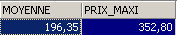
有多少本漫画书？

价格低于100法郎的小说有多少本？


同一类别的书籍数量及每本书的平均价格是多少？
SQL> select upper(genre) GENRE,avg(prix) PRIX_MOYEN,count(*) NOMBRE from biblio group by upper(genre)

同样的问题，但仅针对非小说类书籍：
SQL>
select upper(genre) GENRE,avg(prix) PRIX_MOYEN,count(*) NOMBRE
from biblio
group by upper(genre)
having upper(GENRE)!='ROMAN'
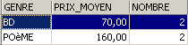
相同的查询，但仅针对150美元以下的书籍：
SQL>
select upper(genre) GENRE,avg(prix) PRIX_MOYEN,count(*) NOMBRE
from biblio
where prix<150
group by upper(genre)
having upper(GENRE)!='ROMAN'

相同的查询，但我们只保留平均书价 >100 法郎的组
SQL>
select upper(genre) GENRE, avg(prix) PRIX_MOYEN,count(*) NOMBRE
from biblio
group by upper(genre)
having avg(prix)>100

3.14. 为 表创建SQL脚本
SQL 是一种可用于多种数据库管理系统 (DBMS) 的标准语言。为了能够在不同的数据库管理系统之间切换，将数据库或其特定元素导出为 SQL 脚本非常有用。当在另一个数据库管理系统中重新运行该脚本时，即可重建脚本中导出的元素。
在此，我们将导出 [BIBLIO] 表。请选择 [提取元数据] 选项：
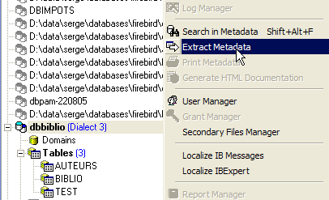
请注意，您必须位于要从中导出元素的数据库中。该选项将启动一个向导：
 |
在何处生成 SQL 脚本：
| |
若选中 [File] 选项，则为文件名 | |
导出内容 | |
用于选择（->）或取消选择（<-）要导出的对象的按钮 |
如果要导出整个数据库，需勾选上方的 [全部提取] 选项。我们只需导出 BIBLIO 表。为此，使用 [4] 选择 [BIBLIO] 表，并使用 [2] 指定文件：
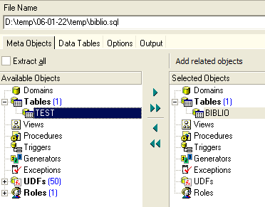
如果到此为止，仅会导出 [BIBLIO] 表的结构。要导出其内容，我们需要使用 [数据表] 选项卡：
 |
使用 [1] 选择 [BIBLIO] 表：
 |
使用 [2] 生成 SQL 脚本：

我们接受提示。这样我们就可以在 [biblio.sql] 文件中查看生成的脚本：
- 第 1 至 3 行是注释
- 第 5 至 12 行是 Firebird 专用的 SQL 语句
- 其余行是标准 SQL，在支持 BIBLIO 表中声明的数据类型的数据库管理系统中应可执行。
让我们在 Firebird 中运行此脚本，以创建一个名为 BIBLIO2 的表，该表将是 BIBLIO 表的克隆。为此，请使用 [脚本执行] (Ctrl-F12)：

现在，让我们加载刚刚生成的 [biblio.sql] 脚本：

将其修改为仅保留表创建和行插入部分。该表重命名为 [BIBLIO2]：
CREATE TABLE BIBLIO2 (
ID INTEGER NOT NULL,
TITRE VARCHAR(30) NOT NULL,
AUTEUR VARCHAR(20) NOT NULL,
GENRE VARCHAR(30) NOT NULL,
ACHAT DATE NOT NULL,
PRIX NUMERIC(6,2) DEFAULT 10 NOT NULL,
DISPONIBLE CHAR(1) NOT NULL
);
INSERT INTO BIBLIO2 (ID, TITRE, AUTEUR, GENRE, ACHAT, PRIX, DISPONIBLE) VALUES (2, 'Les fleurs du mal', 'Baudelaire', 'POèME', '1978-01-01', 120, 'n');
...
COMMIT WORK;
让我们运行这个脚本：
 |  |
我们可以在数据库浏览器中验证 [BIBLIO2] 表是否已创建，以及其结构和内容是否符合预期：
 |  |